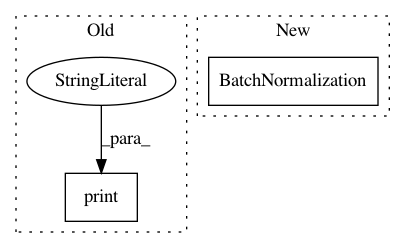

856fd717c4bd7a56ae951b8b687b44b16f1d3c8d,neuron/models.py,,design_dnn,#Any#Any#Any#Any#Any#Any#Any#Any#Any#Any#Any#,117
Before Change
name = "dense"
print("pre-dense size", last_layer)
layers_dict[name] = KL.Dense(nb_labels, name=name)(last_layer)
print("dense size", layers_dict[name].get_shape())
// global max pooling layer
elif final_layer == "globalmaxpooling":
// name = "squeeze"
After Change
elif final_layer == "globalmaxpooling":
name = "batch_norm"
layers_dict[name] = KL.BatchNormalization(name=name)(last_layer)
last_layer = layers_dict[name]
name = "global_max_pool"
layers_dict[name] = KL.Lambda(_global_max_nd, name=name)(last_layer)
In pattern: SUPERPATTERN
Frequency: 3
Non-data size: 2
Instances
Project Name: adalca/neuron
Commit Name: 856fd717c4bd7a56ae951b8b687b44b16f1d3c8d
Time: 2017-04-10
Author: adalca@mit.edu
File Name: neuron/models.py
Class Name:
Method Name: design_dnn
Project Name: NeuromorphicProcessorProject/snn_toolbox
Commit Name: ff68020f31663a0c0023a47dc347531f1f4250af
Time: 2016-09-07
Author: bodo.rueckauer@gmail.com
File Name: ann_architectures/cifar10/alexnet.py
Class Name:
Method Name:
Project Name: NeuromorphicProcessorProject/snn_toolbox
Commit Name: 64ff88344402771c2735dbcacf7010acfeb55b0a
Time: 2016-10-09
Author: bodo.rueckauer@gmail.com
File Name: ann_architectures/cifar10/noise.py
Class Name:
Method Name: